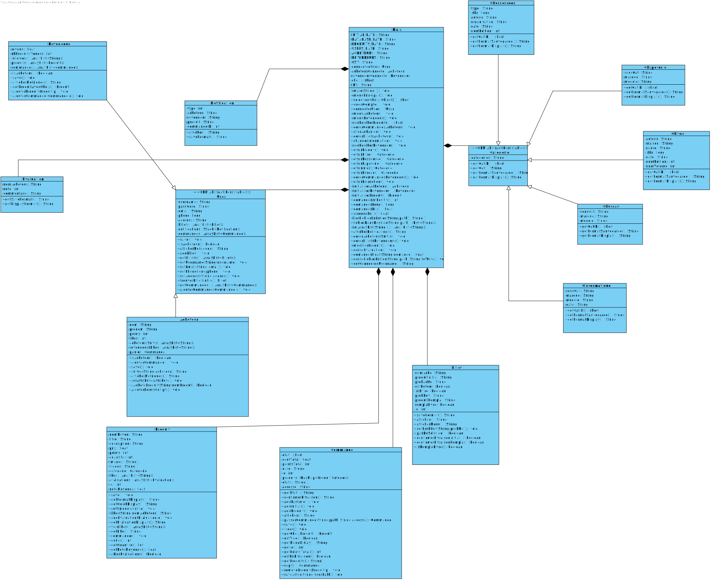

Information de l'équipe
Nom de l'équipe : Les trois mousquetaires
Lien vers dépôt GitHubMembres de l'équipe :
- Martin Medina
- Matricule : 20235219
- Courriel : martin.medina@umontreal.ca
- Temps mis : 35 heures
- Mandi Vigier
- Matricule : 20237155
- Courriel : mandi.teo.vigier@umontreal.ca
- Temps mis : 34 heures
- Étienne Mitchell-Bouchard
- Matricule : 20243430
- Courriel : etienne.mitchell-bouchard@umontreal.ca
- Temps mis : 36 heures
Distribution des tâches
| Tâche | Martin Medina | Mandi Vigier | Étienne Mitchell-Bouchard |
|---|---|---|---|
| Analyse | Réflexion + rédaction (33%) | Réflexion + rédaction (33%) | Réflexion + rédaction (33%) |
| Diagrammes d'activités | 2 diagrammes (33%) | 2 diagrammes (33%) | 2 diagrammes (33%) |
| Diagramme de classes | Logique (30%) | Logique + implémentation (40%) | Logique (30%) |
| Diagrammes de séquence | 2 diagrammes (40%) | 1 diagrammes (20%) | 2 diagrammes (40%) |
| Prototype | Logique + code (30%) | Logique + code (30%) | Logique + code (40%) |
Annonce de distribution du travail
Nous assurons que les 3 coéquipiers ont fait un travail équivalent et désirent avoir la même note.
Tâche 1 : Analyse
Pour mettre en opération le système UniShop, toutes les parties, y compris l'inventaire, les commandes et les utilisateurs, seront informatisées. Les données seront stockées dans des dossiers et dans des fichiers '.csv'. Aucun matériel spécialisé ne sera nécessaire, seule une connexion Internet et un ordinateur standard suffiront. Le système interagira avec d'autres systèmes tels que le service postal pour la livraison des colis et les services de paiement bancaire pour les transactions. Les utilisateurs interagiront avec le système UniShop via un navigateur web. Cependant, dans le contexte du devoir, ils interagiront avec la console. (94 mots)
Tâche 2 : Diagrammes d'activités UML
Diagramme principal (point d'entrée) :

Passer une commande :

Évaluer un produit :

Retourner/échanger une commande :

Confirmer la réception d'une commande :

Offrir un produit à vendre :

Tâche 3 : Diagramme de classes UML
Tâche 4 : Diagrammes de séquence UML
Passer une commande :

Évaluer un produit :

Retourner/échanger une commande :

Confirmer la réception d'une commande :

Offrir un produit à vendre :

Tâche 5 : Prototype
Vous trouverez le code du projet et le fichier JAR dans le dossier Implémentation du dépôt GitHub du projet.
Statistiques GitHub
On a fait l'erreur de ne pas avoir utilisé GitHub dès le début, donc à la fin on a fait le commit de tout le contenu.
Cependant, nous certifions avoir divisé le travail équitablement et nous désirons avoir tous la même note.